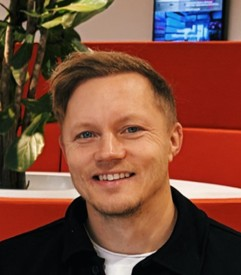

Verksamhetsarkitektur
Förmågor, processer, information, nuläge och målbild. Jag skapar struktur som hjälper verksamhet och beslutsfattare att prioritera och navigera förändring.
Verksamhetsarkitekt med teknisk bakgrund och lång erfarenhet nära integrationer, processer, information och digital utveckling. Jag trivs bäst där verksamhetsbehov behöver bli genomförbara lösningar.

Med ena foten i verksamheten och den andra nära IT.
Jag arbetar med förändringsresor där affärsmål, processer, information, krav och teknik måste hänga ihop. Min tekniska erfarenhet gör att jag kan röra mig från verksamhetens behov till lösningsdialogen utan att tappa helheten.
Jag gillar att göra komplexa initiativ begripliga, hitta beroenden tidigt och skapa tillräcklig struktur för att team ska kunna gå från analys till test, feedback och verklig effekt.
Det som särskiljer min profil är kombinationen av verksamhetsarkitektur, teknisk förståelse och praktiskt förändringsarbete.
Förmågor, processer, information, nuläge och målbild. Jag skapar struktur som hjälper verksamhet och beslutsfattare att prioritera och navigera förändring.
Stor erfarenhet nära integrationsfrågor och samspelet mellan applikationer, gränssnitt och information. Det gör lösningsdialogen konkret redan från verksamhetssidan.
Jag utforskar hur AI kan integreras i befintliga förändringsresor för att återanvända kunskap, korta analysledtider och snabbare nå prototyp och feedback.
Nedan är en medvetet kondenserad version för en one-page-sajt. Byt gärna posterna mot exakta roller, arbetsgivare och årtal från ditt nuvarande CV.
Strukturerar initiativ från idé till genomförande och kopplar verksamhetsbehov till process, information, applikation och beslut.
Erfarenhet av att arbeta nära IT och översätta mellan tekniska beroenden och verksamhetskonsekvenser.
Arbetar praktiskt med dataanalys och automation för att validera hypoteser och göra förändringsarbete mer faktabaserat.
Projektkorten är gjorda för att ersätta mängden undersidor med korta berättelser. Lägg dina befintliga projektlänkar på respektive kort när du migrerar innehållet.
Hur AI kan bli ett naturligt lager i förändringsresan och göra organisationens befintliga kunskap mer tillgänglig och återanvändbar.
Utforskning av hur AI kan stötta bedömningssituationer och minska manuellt arbete utan att flytta själva beslutet från människan.
Strukturering av nuläge och målbild för att skapa gemensamt språk mellan verksamhet, krav och teknisk lösning.
Arbete i initiativ där integrationer och systemberoenden behöver förstås som en del av verksamhetsförändringen, inte som ett separat IT-spår.
Modeller och struktur ska minska komplexitet, inte skapa mer dokumentation.
Allt går inte att kravställa fram. Prototyper och feedback är ofta bättre analysverktyg.
Processer, information, beslut och lärdomar ska kunna ge värde även i nästa initiativ.
Jag diskuterar gärna hur vi kan få verksamhet och IT att arbeta närmare varandra och gå snabbare från idé till något som faktiskt går att testa.